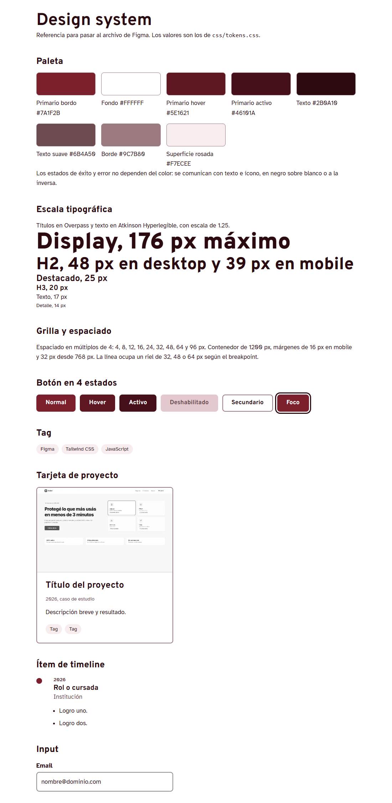
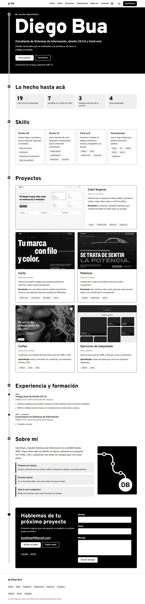
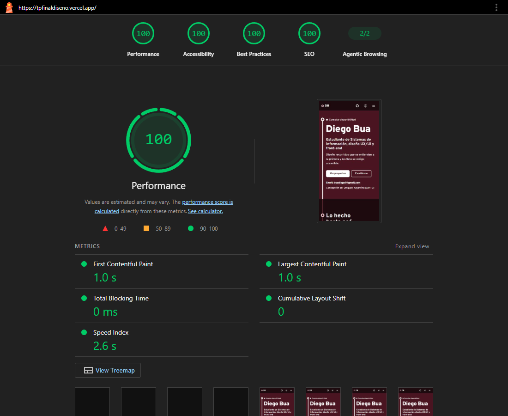

Portfolio web personal: proceso de diseño
Trabajo final de Diseño UX-UI 2026. Licenciatura en Sistemas de Información, UADER, FCyT, sede Concepción del Uruguay.
Diseñadora senior que participa en la selección de perfiles junior. Revisa varios portfolios en una tarde, muchas veces desde el celular.
Es una hipótesis para orientar el diseño, no una persona entrevistada.
Recibe el link por LinkedIn, lo abre en el celular, entra a Cubrí Seguros, recorre el caso y escribe desde "Escribirme".
| Portfolio | Qué funciona | Qué no funciona para este caso |
|---|---|---|
| Brittany Chiang | Rol y propuesta en una línea, salto al contenido, experiencia con fechas y tecnologías | Sin llamado a contactar ni disponibilidad |
| Rauno Freiberg | Personalidad con poco texto, copiar el email con confirmación | Los proyectos no están en la portada |
| Paco Coursey | Lectura rápida, contacto directo con mailto | Proyectos de una línea, sin proceso |
Qué se lleva al diseño: propuesta corta, copiar email con confirmación, contacto directo y lo que falta en los tres: disponibilidad a la vista y proceso en la portada.
Claro, conectado, cuidadoso
Los trabajos de Diego son flujos, así que el sitio se lee como un plano de transporte: una línea une las secciones y las paradas marcan dónde estás.

One-page con las 9 secciones en el orden de la consigna: primero la propuesta, después la evidencia y al final el contacto.
Inicio, Cifras, Skills, Proyectos, Experiencia, Sobre mí, Contacto y footer. Dos casos de estudio en páginas internas y una 404.
| Card sorting | Tarjetas |
|---|---|
| Quién soy | Nombre, rol, ubicación, disponibilidad |
| Qué sé hacer | UX, UI, front-end, herramientas |
| Qué hice | Proyectos y cifras |
| De dónde vengo | Carrera y trabajo final |
| Cómo trabajo | Principios |
| Cómo hablarme | Email, LinkedIn, GitHub, formulario |


09/11/2026 · Luca, Valentín y Luciano · Sí sin ayuda, Parcial con una pista, No si abandonó.
| Tarea | Luca | Valentín | Luciano |
|---|---|---|---|
| Decir a qué se dedica y si está disponible | Sí | Sí | Sí |
| Encontrar el email | Sí | Sí | Parcial |
| Abrir el proyecto más reciente | Sí | Parcial | Sí |
| Contar qué problema resolvía y cómo terminó | Parcial | Parcial | Sí |
| Encontrar su GitHub | Sí | No | Sí |
| En celular, abrir el menú e ir a Experiencia | Sí | Sí | Parcial |
Navegó sin mayores inconvenientes. Encontró rol, disponibilidad, email y proyectos. Tuvo dudas al explicar el resultado del proyecto más reciente.
Entendió el portfolio y encontró el contacto. Le costó identificar el proyecto más reciente y no encontró GitHub. En mobile llegó bien a Experiencia.
Exploró los proyectos solo y encontró GitHub. Le costó un poco ubicar el email y la sección Experiencia desde el menú móvil.
| Participante | Sí | Parcial | No |
|---|---|---|---|
| Luca | 5 | 1 | 0 |
| Valentín | 3 | 2 | 1 |
| Luciano | 4 | 2 | 0 |
| Total | 12 | 5 | 1 |
El portfolio permite identificar rápido la información principal y navegar por sus secciones. Para mejorar: GitHub, la identificación de los proyectos y el contacto en mobile.
| Hallazgo | Cambio aplicado |
|---|---|
| Valentín no encontró GitHub | El ícono de GitHub queda visible en el header también en mobile |
| Costó identificar el proyecto más reciente | Marca "Más reciente" en la tarjeta de Cubrí Seguros |
| Luciano tardó en encontrar el email | El email aparece en el hero, debajo de los botones |
Sitio: tpfinaldiseno.vercel.app · Repo: github.com/buadiego1/Dise-o-UX-UI · Figma: figma.com/design/fRxsWvBy9efbPUUrs7d37K